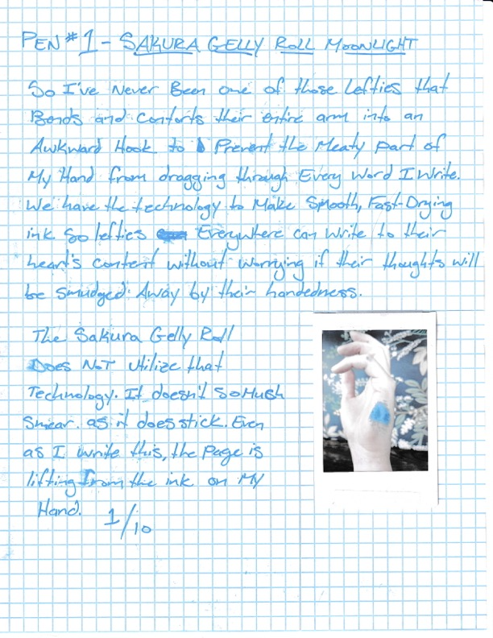

THE INKFINITE WRENCH
March 2026 - Sakura Gelly Roll Moonlight - Japan

Amina: Sakura Gelly Roll Moonlight- Globby? yes. Beautiful color? yes. I've had better gel rollers. I already lost it. I do miss it, though.
Connor: The ink is globby, the clip/cap is useless, and the pen ran dry in about two weeks of use. Becoming an adult means you can finally acquire the treats your parents refused you; growing up means you discover them to be worthless anyway. I liked the sparkly ink enough to use this pen every day, but I complained about it constantly to everyone nearby.
Emma: I knew the Sakura Gelly Roll Midnight before it landed in my hand. A left-handed girl in the 90s, I have smeared the inelegant ink of a Gelly Roll across a wide-ruled sheet of paper at midday, have used it to place dense temporary tattoos on my skin and then lick the color off. I bike home humming "I Have No Fun" by the Vivian Girls and feel its adolescent scrawl permeating my present day.
This pen is pure nostalgia, it writes crudely, with random deposits of ink and a scratchy metallic tip. It is best suited for bringing some humor to a to-do list or considering a new addition to one's forearm.
Annie: The Sakura Gelly Roll Moonlight left my mind almost as quickly as the ink did the vessel. What it did briefly conjure was nostalgia for writing utensils I was never offered as a child - ones reserved for cool girls with nothing but doodling to do. The happiest shades of blue and purple - I'd have to write home about them using a different pen.
Abby: I'm not a big fan of gelly pens and this one, sadly, did not a convert of me make. On a positive note, in a world of constant uncertainty, it's a luxury to have one's convictions further confirmed. I also regret not choosing the teal one.
Ryn:

Neil:
I know where I keep my stuff. I put my things where they belong and they’re there when I need to use them again. I have a good memory and I don’t often lose things. I lost this pen within a week of getting it and had zero interest in finding it. It was chunky and gloppy and didn’t make my writing more fun or whimsical or whatever a writing utensil like this is intended to do.
Once, when I was eight years old, I drank too much strawberry milk at a family friend’s house. I had never puked in public before and I didn’t know how that was supposed to work, so I took my pants down, sat on the toilet and puked all over the floor. I don’t know why this is the story that comes to mind when I think of this pen, but it’s true.